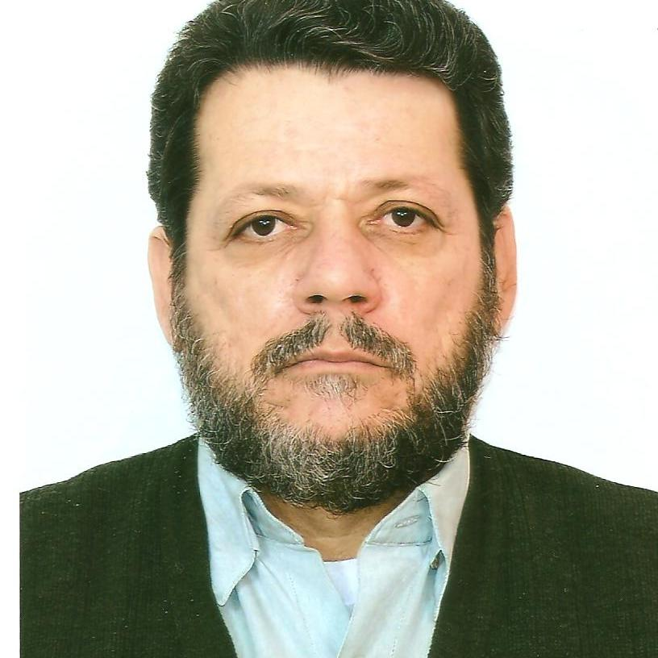

Luiz Eduardo Corrêa Lima
Bacharel em Biologia, Faculdade de Humanidades Pedro II (FAHUPE), Rio de Janeiro, 1978;
Licenciado em Biologia, Faculdade de Humanidades Pedro II (FAHUPE), Rio de Janeiro, 1978;
Especialista em Malacologia, Museu Nacional da Universidade Federal do Rio de Janeiro (UFRJ), Rio de Janeiro, 1981;
Mestrado em Biologia Animal, Universidade Federal do Paraná (UFPR); Curitiba, 1983;
Doutorado em Biologia Animal, Universidade de São Paulo (USP), não concluído;
Vereador da Câmara Municipal de Caçapava (1997-2000 e 2001-2004);
Presidente da Câmara Municipal de Caçapava (2001-2002);
Professor de Ensino Superior, Técnico e Médio, há mais de 36 anos;
Sócio Fundador da Academia Caçapavense de Letras – ACL (Cadeira 25), em 0utubro de 2007.
Vice-presidente da Academia Caçapavense de Letras – ACL (Biênio 2010-2011 e 2012-2013);
Membro Correspondente da Academia de Lorenense de Letras, desde 2010;
Coordenador do Curso de Biologia das Faculdades Integradas Teresa D`Ávila (FATEA) de Lorena (2002 - 2007);
Membro do Conselho Consultivo da Floresta Nacional (FLONA) de Lorena, desde a fundação em 2005, até o presente;
Coordenador Geral do Conselho Administrativo da Floresta Nacional (FLONA) de Lorena (2005-2007);
Vice-Presidente do Conselho Consultivo da Floresta Nacional (FLONA) de Lorena (2008-2010);
Membro do Conselho Municipal do Meio Ambiente (COMMAM) de Lorena (2008-2010);
Professor Titular de Biologia das Faculdades Integradas Teresa D`Ávila (FATEA) de Lorena, tendo ministrado aulas nos Cursos de Graduação em Biologia, Administração de Empresas, Enfermagem e Fonoaudiologia, Economia Doméstica (desde 1989 até o presente);
Professor de Biologia do Ensino Médio da Escola Professora Francisca Salles Damasco de Caçapava (desde 1989 até o presente).
Professor na Área de Meio Ambiente, Saúde e Segurança do SENAC de Guaratinguetá (desde 2009 até o presente);
Professor de Pós-Graduação do Centro Universitário Salesiano (UNISAL) de Lorena (de 02/1997 até 12/2002);
Professor De Biologia e de Meio Ambiente do Ensino Médio e Técnico da Escola Técnica Everardo Passos (ETEP) de São José dos Campos (de 02/1994 até 06/2006);
Professor Concursado de Biologia e Meio Ambiente do Centro Estadual de Ensino Tecnológico Paula Souza (CEETEPS), ministrando aulas na Escola Técnica Estadual “Machado de Assis” de Caçapava (de 02/1995 até 06/2004);
Professor de Biologia do Ensino Médio do Instituto Nossa Senhora Auxiliadora (INSA) de Cruzeiro (de 01/2007 até 12/2007);
Professor Adjunto de Biologia Animal dos Cursos de Graduação em Biologia e Agronomia da Universidade de Taubaté (de 08/1980 até 02/1997);
Pesquisador do Museu Nacional da Universidade Federal do Rio de Janeiro (de 09/1977 até 12/1983);
Pesquisador do Museu de Zoologia da Universidade de São Paulo (de 08/1985 até 12/1989);
Vice-Presidente do Comitê Paulista da Bacia Hidrográfica do Rio Paraíba do Sul (Biênio 1999 - 2000);
Membro e Coordenador da Câmara Técnica Institucional do Comitê de Integração da Bacia Hidrográfica do Rio Paraíba do Sul (Biênio 2001-2002);
Conselheiro do Conselho Estadual do Meio Ambiente (CONSEMA) do Estado de São Paulo, Órgão máximo em Meio Ambiente do Estado (de 01/1997 até 12/2001);
Presidente do Conselho Municipal de Defesa do Meio Ambiente (COMDEMA) do Município de Caçapava (Biênio 1991-1992);
Publicou 9 livros e mais de 800 Trabalhos e Artigos nas áreas de Biologia Geral, Biologia Animal (Zoologia), Educação, Ensino, Meio Ambiente, Política, Rotarismo e sobre as mais diversas questões relacionadas à Região do Vale do Paraíba, seus aspectos ambientais, geográfico, biológicos e naturalísticos e ainda sobre a sua ocupação;
Publicou inúmeros Contos, Poesias e Cordéis sobre os mais diversos temas;
Ministrou vários Cursos e proferiu inúmeras Palestras sob os mais diversos temas, principalmente sobre Meio Ambiente e Política, em quase todas as cidades da Região Valeparaibana;
Sócio Fundador do Rotary Club Caçapava-Jequitibá, em 07/11/1991.
Presidente do Rotary Club Caçapava-Jequitibá nos Anos Rotários 1996/1997 e 2011/2012;
Vice-Presidente do Rotary Club Caçapava-Jequitibá nos Anos Rotários 1997/1998, 2005/2006, 2006/2007.
Governador Assistente da Área 04 do Distrito 4.600 de Rotary International nos Anos Rotários 2000/2001 e 2001/2002;
Membro Associado do Instituto de Estudos Valeparaibanos (IEV), desde 1987 até o presente;
Sócio Fundador da Associação Nacional dos Amigos da Escola (ANAE), em 08/2006;
Sócio e Membro Honorário de várias outras ONGs e Associações Ambientais, Científicas, Educacionais e Culturais.
Colaborador de vários Sites, Jornais e Revistas da Região Valeparaibana.
Nos últimos 4 anos publicou 1 “e-book” e 99 artigos no site do Recanto das Letras, os quais são contados e auditados diariamente e já contabilizam mais de 142.000 leituras. Para acessar basta entrar na página (www. recantodasletras.com.br/autores/profluizeduardo).
Premiação:
Recebeu a DISTINÇÃO ECOLÓGICA “ PROF. JOSÉ LUIS PASIN “.